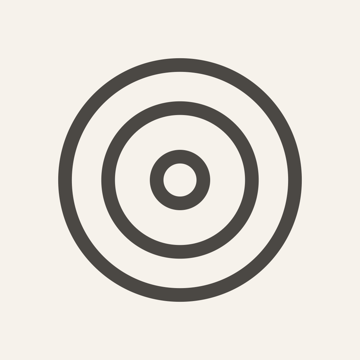

Bientôt sur l'App Store
Le rythme au poignet. La tête au soin.
Volume, durée : DROPP calcule le débit, bat la cadence et vous prévient à la fin. Sur iPhone et Apple Watch.
La cadence se sent — vibration subtile au poignet ou sur iPhone.
En quinze secondes
1 · Saisissez volume et durée
2 · DROPP calcule le débit
3 · L'écran et l'Apple Watch battent le rythme
4 · Calez, puis lancez le suivi
5 · Le temps restant se suit tout seul
6 · La fin vous prévient — où que vous soyez
Vous connaissez ce moment
Ce n'est pas une question de compétence. C'est une charge — et DROPP la porte.
Trois gestes
Volume et durée deviennent immédiatement gouttes par minute, secondes par goutte et mL/h. Facteurs 10, 15, 20 et 60 gtt/mL. Rien à retenir, rien à refaire.
Essayez
Hors plage plausible — l'app refuse de battre un tempo absurde.
Molettes à glisser — comme dans l'app. Démo réglée sur un perfuseur 20 gtt/mL.
La scène bat la cadence calculée — visible, perceptible au poignet, audible si vous l'activez (un tick discret, pas plus fort qu'un cliquetis, qui respecte le mode silencieux). Réglez la molette jusqu'à l'unisson : quand la goutte du perfuseur tombe avec celle de DROPP, vous y êtes.
Essayez
La perfusion
Le tempo Dropp
réglez la molette jusqu'à l'unisson
Le temps restant se suit tout seul. Une pré-alerte prévient cinq minutes avant la fin, des rappels s'adaptent à la durée — un point à mi-parcours pour une perf d'une heure, des repères réguliers pour celle qui court sur la nuit. La fin ne repose plus seulement sur votre mémoire.
Dropp Pro · Apple Watch
Lancez une perfusion à la couronne. Suivez-la, mettez-la en pause, retrouvez son repère — Box 3, Fauteuil 5, Perfusion A — sans jamais taper de texte. Le poignet bat la cadence pendant le calage, et ses alarmes sonnent même si l'iPhone est resté au vestiaire.
Dropp Pro · Mode Tap
Reproduisez une cadence observée en touchant l'écran : DROPP affiche sa fréquence par minute — sans chronomètre ni calcul mental. Pour un débit de perfusion, la lecture donne aussi les mL/h, de quoi recaler la molette en confiance. Sur iPhone et au poignet.
Essayez
Dropp Pro · Perfusions simultanées
Des repères de lieux, jamais de noms — Box 3, Fauteuil 5, Passage 2. Le repère est optionnel.
Aperçu Pro
Dropp Pro
Un signal cinq minutes avant la fin, des repères adaptés à la durée.
L'Apple Watch prévient, même si l'iPhone est resté au vestiaire.
Perfusions et relevés restent sur votre appareil — nulle part ailleurs.
La même goutte, avec de la profondeur — la nappe que vous voyez ici est celle de l'app, en Graphite.
Ce panneau reprend le thème Graphite de l'app, inclus avec Dropp Pro.
Gratuit et Pro
Confiance
Outil d'aide au calcul, au rythme et au suivi. Ne remplace ni le jugement clinique, ni les protocoles locaux, ni les dispositifs de contrôle.
Questions directes
Les calculs illimités, le tempo visuel, le suivi d'une perfusion et l'alarme de fin — sans publicité, sans compte, sans limite de temps.
Oui, entièrement. Tout est calculé et stocké sur l'appareil ; aucune connexion n'est nécessaire, jamais.
Oui — l'app Watch accompagne l'app iPhone et s'installe par elle. Ensuite, les alarmes du poignet sonnent même si l'iPhone est éteint ou hors de portée.
10, 15, 20 et 60 gouttes par millilitre — le facteur se change à tout moment dans les réglages.
À reproduire une cadence observée en touchant l'écran pour lire sa fréquence par minute — et, pour un débit de perfusion, ses mL/h. Sans chronomètre ni calcul mental.
Non. DROPP est un outil d'aide au calcul, au rythme et au suivi. Il ne mesure rien, ne décide rien, et ne se substitue à aucun dispositif ni protocole.
iOS 17 ou ultérieur, watchOS 10 ou ultérieur.

Été 2026
Conçu par un soignant, testé en poste — pour toutes celles et ceux qui comptent les gouttes.
Revoir DROPP en action